Что приготовить из яиц
Омлеты, яичница, запеканки и выпечка, где яйца главные. 125 рецептов: у каждого время, калории и БЖУ на порцию, пошаговые инструкции и список покупок
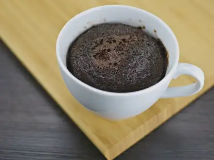
Шоколадный кекс в кружке в микроволновке7 мин · 506 ккал · Б 15 г · Десерт Яичница-глазунья с помидорами10 мин · 243 ккал · Б 15 г · Завтрак
Яичница-глазунья с помидорами10 мин · 243 ккал · Б 15 г · Завтрак Яйца всмятку и в мешочек10 мин · 173 ккал · Б 14 г · Завтрак
Яйца всмятку и в мешочек10 мин · 173 ккал · Б 14 г · Завтрак Яичница с беконом12 мин · 473 ккал · Б 28 г · Второе блюдо
Яичница с беконом12 мин · 473 ккал · Б 28 г · Второе блюдо Овсяноблин15 мин · 339 ккал · Б 18 г · Завтрак
Овсяноблин15 мин · 339 ккал · Б 18 г · Завтрак Гренки сладкие15 мин · 279 ккал · Б 9 г · Завтрак
Гренки сладкие15 мин · 279 ккал · Б 9 г · Завтрак Бутерброды с авокадо и яйцом15 мин · 351 ккал · Б 13 г · Завтрак
Бутерброды с авокадо и яйцом15 мин · 351 ккал · Б 13 г · Завтрак Банановые панкейки из трёх продуктов15 мин · 294 ккал · Б 11 г · Завтрак
Банановые панкейки из трёх продуктов15 мин · 294 ккал · Б 11 г · Завтрак Мацебрай15 мин · 368 ккал · Б 15 г · Завтрак
Мацебрай15 мин · 368 ккал · Б 15 г · Завтрак Омлет с курицей15 мин · 361 ккал · Б 34 г · Завтрак
Омлет с курицей15 мин · 361 ккал · Б 34 г · Завтрак Омлет с остатками овощей15 мин · 361 ккал · Б 18 г · Завтрак
Омлет с остатками овощей15 мин · 361 ккал · Б 18 г · Завтрак Крабовые палочки в кляре15 мин · 439 ккал · Б 21 г · Второе блюдо
Крабовые палочки в кляре15 мин · 439 ккал · Б 21 г · Второе блюдо- Лапша с чесноком, соевым соусом и зелёным луком15 мин · 648 ккал · Б 23 г · Второе блюдо
- Китайский суп с яйцом и помидорами15 мин · 183 ккал · Б 9 г · Суп
 Жареная гречка с яйцом и луком15 мин · 445 ккал · Б 16 г · Второе блюдо
Жареная гречка с яйцом и луком15 мин · 445 ккал · Б 16 г · Второе блюдо Сосиски в лаваше с сыром на сковороде15 мин · 643 ккал · Б 30 г · Второе блюдо
Сосиски в лаваше с сыром на сковороде15 мин · 643 ккал · Б 30 г · Второе блюдо Омлет с тунцом и помидорами15 мин · 348 ккал · Б 37 г · Второе блюдо
Омлет с тунцом и помидорами15 мин · 348 ккал · Б 37 г · Второе блюдо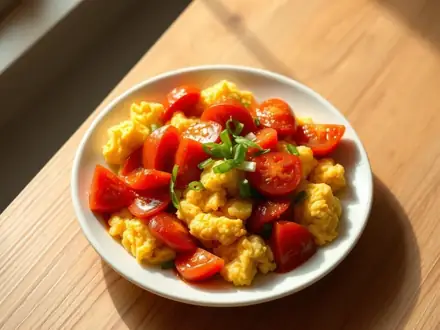
Яйца с помидорами по-китайски15 мин · 338 ккал · Б 16 г · Второе блюдо Яичница в кольцах болгарского перца15 мин · 349 ккал · Б 21 г · Второе блюдо
Яичница в кольцах болгарского перца15 мин · 349 ккал · Б 21 г · Второе блюдо Омлет с сосисками на сковороде15 мин · 445 ккал · Б 23 г · Второе блюдо
Омлет с сосисками на сковороде15 мин · 445 ккал · Б 23 г · Второе блюдо Омлет со шпинатом и фетой15 мин · 356 ккал · Б 22 г · Второе блюдо
Омлет со шпинатом и фетой15 мин · 356 ккал · Б 22 г · Второе блюдо Омлет с крабовыми палочками15 мин · 360 ккал · Б 24 г · Второе блюдо
Омлет с крабовыми палочками15 мин · 360 ккал · Б 24 г · Второе блюдо Креветки с яйцом по-китайски15 мин · 368 ккал · Б 33 г · Второе блюдо
Креветки с яйцом по-китайски15 мин · 368 ккал · Б 33 г · Второе блюдо Омлет Пуляр - пышный французский омлет15 мин · 278 ккал · Б 14 г · Второе блюдо
Омлет Пуляр - пышный французский омлет15 мин · 278 ккал · Б 14 г · Второе блюдо Анда бхурджи - яичница-болтунья по-индийски15 мин · 342 ккал · Б 19 г · Второе блюдо
Анда бхурджи - яичница-болтунья по-индийски15 мин · 342 ккал · Б 19 г · Второе блюдо Омлет на пару20 мин · 223 ккал · Б 16 г · Завтрак
Омлет на пару20 мин · 223 ккал · Б 16 г · Завтрак Салат с тунцом и яйцом20 мин · 258 ккал · Б 23 г · Салат
Салат с тунцом и яйцом20 мин · 258 ккал · Б 23 г · Салат Жареный рис с яйцом и овощами20 мин · 532 ккал · Б 16 г · Второе блюдо
Жареный рис с яйцом и овощами20 мин · 532 ккал · Б 16 г · Второе блюдо Жареный рис с овощами по-домашнему20 мин · 401 ккал · Б 11 г · Второе блюдо
Жареный рис с овощами по-домашнему20 мин · 401 ккал · Б 11 г · Второе блюдо Макароны с яйцом на сковороде20 мин · 521 ккал · Б 21 г · Второе блюдо
Макароны с яйцом на сковороде20 мин · 521 ккал · Б 21 г · Второе блюдо Чылбыр (яйца пашот на йогурте)20 мин · 562 ккал · Б 34 г · Второе блюдо
Чылбыр (яйца пашот на йогурте)20 мин · 562 ккал · Б 34 г · Второе блюдо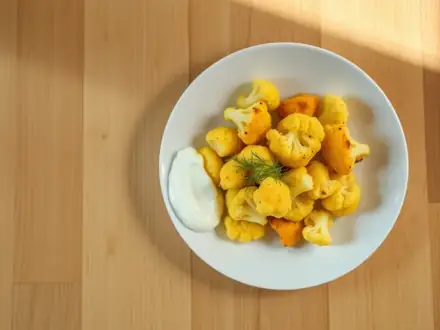
Цветная капуста, жаренная с яйцом20 мин · 341 ккал · Б 18 г · Второе блюдо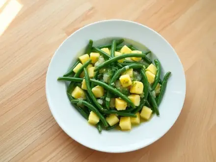
Стручковая фасоль с яйцом20 мин · 330 ккал · Б 19 г · Второе блюдо Страчателла: итальянский суп с яйцом и шпинатом20 мин · 266 ккал · Б 33 г · Суп
Страчателла: итальянский суп с яйцом и шпинатом20 мин · 266 ккал · Б 33 г · Суп Фриттата с макаронами20 мин · 565 ккал · Б 31 г · Второе блюдо
Фриттата с макаронами20 мин · 565 ккал · Б 31 г · Второе блюдо Жареные макароны с овощами по-китайски20 мин · 525 ккал · Б 21 г · Второе блюдо
Жареные макароны с овощами по-китайски20 мин · 525 ккал · Б 21 г · Второе блюдо Миги - жареный хлеб с колбасками по-испански20 мин · 781 ккал · Б 28 г · Второе блюдо
Миги - жареный хлеб с колбасками по-испански20 мин · 781 ккал · Б 28 г · Второе блюдо Конвертики из лаваша с ветчиной и сыром на сковороде20 мин · 768 ккал · Б 37 г · Второе блюдо
Конвертики из лаваша с ветчиной и сыром на сковороде20 мин · 768 ккал · Б 37 г · Второе блюдо- Сосиски в кляре на сковороде20 мин · 552 ккал · Б 18 г · Второе блюдо
 Оладьи из рыбных консервов20 мин · 598 ккал · Б 39 г · Второе блюдо
Оладьи из рыбных консервов20 мин · 598 ккал · Б 39 г · Второе блюдо Омлет с грибами и сыром20 мин · 394 ккал · Б 26 г · Второе блюдо
Омлет с грибами и сыром20 мин · 394 ккал · Б 26 г · Второе блюдо Чижи-пижи - яйца с луком по-грузински20 мин · 348 ккал · Б 19 г · Второе блюдо
Чижи-пижи - яйца с луком по-грузински20 мин · 348 ккал · Б 19 г · Второе блюдо Жареный сыр в панировке по-чешски20 мин · 724 ккал · Б 34 г · Второе блюдо
Жареный сыр в панировке по-чешски20 мин · 724 ккал · Б 34 г · Второе блюдо Бифштекс рубленый с яйцом22 мин · 601 ккал · Б 33 г · Второе блюдо
Бифштекс рубленый с яйцом22 мин · 601 ккал · Б 33 г · Второе блюдо Форшмак из сельди25 мин · 234 ккал · Б 13 г · Закуска
Форшмак из сельди25 мин · 234 ккал · Б 13 г · Закуска Спагетти карбонара25 мин · 962 ккал · Б 49 г · Второе блюдо
Спагетти карбонара25 мин · 962 ккал · Б 49 г · Второе блюдо Сырный омлет-фриттата25 мин · 354 ккал · Б 24 г · Завтрак
Сырный омлет-фриттата25 мин · 354 ккал · Б 24 г · Завтрак Протеиновые блины на твороге25 мин · 344 ккал · Б 29 г · Завтрак
Протеиновые блины на твороге25 мин · 344 ккал · Б 29 г · Завтрак Салат из курицы из супа25 мин · 369 ккал · Б 31 г · Салат
Салат из курицы из супа25 мин · 369 ккал · Б 31 г · Салат Оладьи из вчерашнего риса25 мин · 380 ккал · Б 10 г · Завтрак
Оладьи из вчерашнего риса25 мин · 380 ккал · Б 10 г · Завтрак Куриные отбивные в кляре25 мин · 428 ккал · Б 54 г · Второе блюдо
Куриные отбивные в кляре25 мин · 428 ккал · Б 54 г · Второе блюдо Рыба по-польски25 мин · 340 ккал · Б 33 г · Второе блюдо
Рыба по-польски25 мин · 340 ккал · Б 33 г · Второе блюдо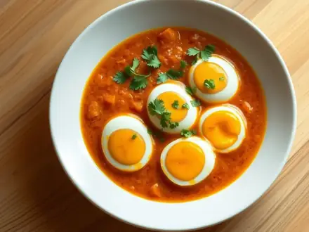
Яичное карри (яйца в соусе карри)25 мин · 454 ккал · Б 24 г · Второе блюдо Яйца со шпинатом и сыром в духовке25 мин · 576 ккал · Б 30 г · Второе блюдо
Яйца со шпинатом и сыром в духовке25 мин · 576 ккал · Б 30 г · Второе блюдо Салат с кальмарами, яйцом и огурцом25 мин · 415 ккал · Б 38 г · Салат
Салат с кальмарами, яйцом и огурцом25 мин · 415 ккал · Б 38 г · Салат Лионский салат с беконом и яйцом пашот25 мин · 582 ккал · Б 25 г · Салат
Лионский салат с беконом и яйцом пашот25 мин · 582 ккал · Б 25 г · Салат Хэш из картошки и отварной говядины25 мин · 732 ккал · Б 45 г · Второе блюдо
Хэш из картошки и отварной говядины25 мин · 732 ккал · Б 45 г · Второе блюдо Оякодон - рис с курицей и яйцом по-японски25 мин · 713 ккал · Б 44 г · Второе блюдо
Оякодон - рис с курицей и яйцом по-японски25 мин · 713 ккал · Б 44 г · Второе блюдо Куриная печень в кляре25 мин · 457 ккал · Б 38 г · Второе блюдо
Куриная печень в кляре25 мин · 457 ккал · Б 38 г · Второе блюдо- Мясные оладьи из фарша25 мин · 506 ккал · Б 23 г · Второе блюдо
 Шницель рубленый из фарша в сухарях25 мин · 541 ккал · Б 27 г · Второе блюдо
Шницель рубленый из фарша в сухарях25 мин · 541 ккал · Б 27 г · Второе блюдо Яйца с фаршем по-турецки (кыймалы юмурта)25 мин · 635 ккал · Б 38 г · Второе блюдо
Яйца с фаршем по-турецки (кыймалы юмурта)25 мин · 635 ккал · Б 38 г · Второе блюдо Котлеты из крабовых палочек с сыром25 мин · 588 ккал · Б 28 г · Второе блюдо
Котлеты из крабовых палочек с сыром25 мин · 588 ккал · Б 28 г · Второе блюдо Омлетный рулет с ветчиной и сыром в духовке25 мин · 406 ккал · Б 26 г · Второе блюдо
Омлетный рулет с ветчиной и сыром в духовке25 мин · 406 ккал · Б 26 г · Второе блюдо Яйца кокот с ветчиной и сливками25 мин · 440 ккал · Б 25 г · Второе блюдо
Яйца кокот с ветчиной и сливками25 мин · 440 ккал · Б 25 г · Второе блюдо Фриттата с беконом и помидорами25 мин · 424 ккал · Б 27 г · Второе блюдо
Фриттата с беконом и помидорами25 мин · 424 ккал · Б 27 г · Второе блюдо Яйца, запечённые в авокадо25 мин · 515 ккал · Б 23 г · Второе блюдо
Яйца, запечённые в авокадо25 мин · 515 ккал · Б 23 г · Второе блюдо Минтай в кляре30 мин · 366 ккал · Б 30 г · Второе блюдо
Минтай в кляре30 мин · 366 ккал · Б 30 г · Второе блюдо Жареная рисовая лапша с креветками30 мин · 757 ккал · Б 41 г · Второе блюдо
Жареная рисовая лапша с креветками30 мин · 757 ккал · Б 41 г · Второе блюдо Свиные отбивные в кляре30 мин · 590 ккал · Б 29 г · Второе блюдо
Свиные отбивные в кляре30 мин · 590 ккал · Б 29 г · Второе блюдо Печёночные оладьи из говяжьей печени30 мин · 374 ккал · Б 28 г · Второе блюдо
Печёночные оладьи из говяжьей печени30 мин · 374 ккал · Б 28 г · Второе блюдо Зразы мясные с яйцом30 мин · 546 ккал · Б 29 г · Второе блюдо
Зразы мясные с яйцом30 мин · 546 ккал · Б 29 г · Второе блюдо Рыба, запечённая с омлетом, как в детском саду30 мин · 245 ккал · Б 32 г · Второе блюдо
Рыба, запечённая с омлетом, как в детском саду30 мин · 245 ккал · Б 32 г · Второе блюдо Запеканка с тунцом и брокколи30 мин · 314 ккал · Б 29 г · Второе блюдо
Запеканка с тунцом и брокколи30 мин · 314 ккал · Б 29 г · Второе блюдо- Крестьянский завтрак с картошкой и беконом30 мин · 593 ккал · Б 23 г · Второе блюдо
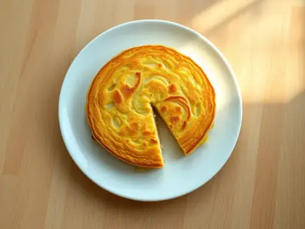
Испанская тортилья с картофелем30 мин · 374 ккал · Б 13 г · Второе блюдо- Кюкю с зеленью (азербайджанский омлет)30 мин · 418 ккал · Б 22 г · Второе блюдо
 Кабачковые оладьи с сыром и чесноком30 мин · 544 ккал · Б 18 г · Второе блюдо
Кабачковые оладьи с сыром и чесноком30 мин · 544 ккал · Б 18 г · Второе блюдо Запеканка из брокколи с яйцом и сыром30 мин · 466 ккал · Б 33 г · Второе блюдо
Запеканка из брокколи с яйцом и сыром30 мин · 466 ккал · Б 33 г · Второе блюдо- Окономияки (японская капустная лепёшка)30 мин · 497 ккал · Б 16 г · Второе блюдо
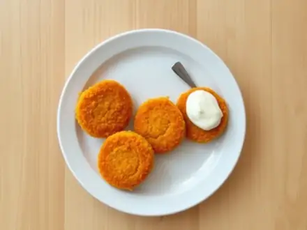
Морковные котлеты с манкой30 мин · 564 ккал · Б 16 г · Второе блюдо Чушки бюрек (перцы с брынзой в кляре)30 мин · 637 ккал · Б 30 г · Второе блюдо
Чушки бюрек (перцы с брынзой в кляре)30 мин · 637 ккал · Б 30 г · Второе блюдо Чихиртма из курицы30 мин · 251 ккал · Б 28 г · Суп
Чихиртма из курицы30 мин · 251 ккал · Б 28 г · Суп Салат с куриной печенью и солёными огурцами30 мин · 494 ккал · Б 32 г · Салат
Салат с куриной печенью и солёными огурцами30 мин · 494 ккал · Б 32 г · Салат Салат Кобб с курицей, беконом и авокадо30 мин · 604 ккал · Б 43 г · Салат
Салат Кобб с курицей, беконом и авокадо30 мин · 604 ккал · Б 43 г · Салат Салат с курицей, жареными грибами и сыром30 мин · 456 ккал · Б 35 г · Салат
Салат с курицей, жареными грибами и сыром30 мин · 456 ккал · Б 35 г · Салат Котлеты из отварной курицы30 мин · 518 ккал · Б 41 г · Второе блюдо
Котлеты из отварной курицы30 мин · 518 ккал · Б 41 г · Второе блюдо Ленивая ачма из лаваша30 мин · 531 ккал · Б 24 г · Второе блюдо
Ленивая ачма из лаваша30 мин · 531 ккал · Б 24 г · Второе блюдо Куриные зразы с яйцом и зелёным луком30 мин · 504 ккал · Б 39 г · Второе блюдо
Куриные зразы с яйцом и зелёным луком30 мин · 504 ккал · Б 39 г · Второе блюдо Курица с помидорами и яйцами по-азербайджански (чыгыртма)30 мин · 412 ккал · Б 49 г · Второе блюдо
Курица с помидорами и яйцами по-азербайджански (чыгыртма)30 мин · 412 ккал · Б 49 г · Второе блюдо Рыбное суфле из минтая на пару30 мин · 279 ккал · Б 33 г · Второе блюдо
Рыбное суфле из минтая на пару30 мин · 279 ккал · Б 33 г · Второе блюдо Драчена - русский омлет со сметаной в духовке30 мин · 299 ккал · Б 15 г · Второе блюдо
Драчена - русский омлет со сметаной в духовке30 мин · 299 ккал · Б 15 г · Второе блюдо Яйца, запечённые в помидорах с сыром30 мин · 351 ккал · Б 23 г · Второе блюдо
Яйца, запечённые в помидорах с сыром30 мин · 351 ккал · Б 23 г · Второе блюдо Яйца Морне под сырным соусом30 мин · 492 ккал · Б 27 г · Второе блюдо
Яйца Морне под сырным соусом30 мин · 492 ккал · Б 27 г · Второе блюдо Котлеты из варёных яиц с сыром30 мин · 466 ккал · Б 26 г · Второе блюдо
Котлеты из варёных яиц с сыром30 мин · 466 ккал · Б 26 г · Второе блюдо Омлет как в детском саду в духовке30 мин · 337 ккал · Б 21 г · Второе блюдо
Омлет как в детском саду в духовке30 мин · 337 ккал · Б 21 г · Второе блюдо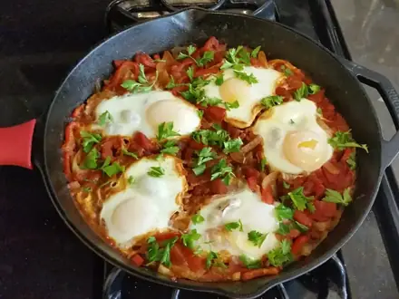
Шакшука35 мин · 361 ккал · Б 19 г · Завтрак Крабовый салат35 мин · 345 ккал · Б 12 г · Салат
Крабовый салат35 мин · 345 ккал · Б 12 г · Салат Запеканка из макарон с сыром и яйцом35 мин · 358 ккал · Б 19 г · Второе блюдо
Запеканка из макарон с сыром и яйцом35 мин · 358 ккал · Б 19 г · Второе блюдо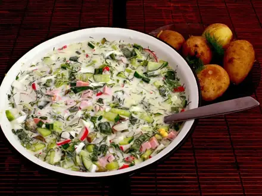
Окрошка на кефире40 мин · 309 ккал · Б 17 г · Суп Творожные маффины40 мин · 236 ккал · Б 18 г · Выпечка
Творожные маффины40 мин · 236 ккал · Б 18 г · Выпечка Блины на молоке45 мин · 379 ккал · Б 12 г · Завтрак
Блины на молоке45 мин · 379 ккал · Б 12 г · Завтрак Творожная запеканка без сахара для малышей50 мин · 237 ккал · Б 22 г · Завтрак
Творожная запеканка без сахара для малышей50 мин · 237 ккал · Б 22 г · Завтрак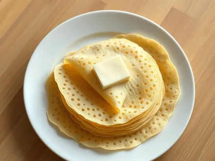
Тонкие блины на кефире с дырочками50 мин · 433 ккал · Б 14 г · Завтрак Творожная запеканка60 мин · 244 ккал · Б 18 г · Завтрак
Творожная запеканка60 мин · 244 ккал · Б 18 г · Завтрак Шарлотка с яблоками60 мин · 251 ккал · Б 6 г · Выпечка
Шарлотка с яблоками60 мин · 251 ккал · Б 6 г · Выпечка Оливье60 мин · 494 ккал · Б 16 г · Салат
Оливье60 мин · 494 ккал · Б 16 г · Салат Киш лорен60 мин · 631 ккал · Б 23 г · Выпечка
Киш лорен60 мин · 631 ккал · Б 23 г · Выпечка Салат Мимоза с сардинами60 мин · 455 ккал · Б 21 г · Салат
Салат Мимоза с сардинами60 мин · 455 ккал · Б 21 г · Салат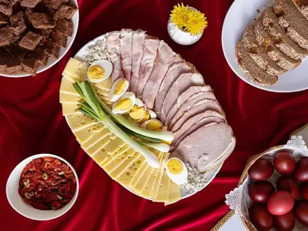
Крашеные яйца в луковой шелухе60 мин · 86 ккал · Б 7 г · Закуска Блинчики с творогом60 мин · 547 ккал · Б 28 г · Завтрак
Блинчики с творогом60 мин · 547 ккал · Б 28 г · Завтрак Хлебный пудинг60 мин · 474 ккал · Б 15 г · Десерт
Хлебный пудинг60 мин · 474 ккал · Б 15 г · Десерт Гефилте фиш (рыбные котлеты в бульоне)70 мин · 249 ккал · Б 34 г · Второе блюдо
Гефилте фиш (рыбные котлеты в бульоне)70 мин · 249 ккал · Б 34 г · Второе блюдо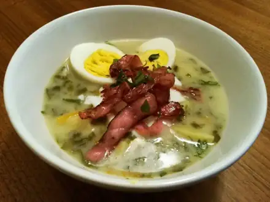
Зелёный борщ со шпинатом80 мин · 349 ккал · Б 27 г · Суп Кугель картофельный80 мин · 290 ккал · Б 7 г · Гарнир
Кугель картофельный80 мин · 290 ккал · Б 7 г · Гарнир Блинчики с мясом80 мин · 688 ккал · Б 28 г · Второе блюдо
Блинчики с мясом80 мин · 688 ккал · Б 28 г · Второе блюдо Чак-чак90 мин · 390 ккал · Б 8 г · Десерт
Чак-чак90 мин · 390 ккал · Б 8 г · Десерт Селёдка под шубой100 мин · 437 ккал · Б 16 г · Салат
Селёдка под шубой100 мин · 437 ккал · Б 16 г · Салат Медовик упрощённый120 мин · 485 ккал · Б 8 г · Десерт
Медовик упрощённый120 мин · 485 ккал · Б 8 г · Десерт Хала180 мин · 270 ккал · Б 8 г · Выпечка
Хала180 мин · 270 ккал · Б 8 г · Выпечка Бешбармак210 мин · 796 ккал · Б 49 г · Второе блюдо
Бешбармак210 мин · 796 ккал · Б 49 г · Второе блюдо Кулич пасхальный300 мин · 432 ккал · Б 9 г · Выпечка
Кулич пасхальный300 мин · 432 ккал · Б 9 г · Выпечка- Яичные маффины с овощами30 мин · 273 ккал · Б 20 г · Завтрак
- Рисовая запеканка с яблоком75 мин · 280 ккал · Б 8 г · Десерт
- Мачанка с блинами90 мин · 977 ккал · Б 38 г · Второе блюдо
Другие подборки
- Что приготовить из курицы
- Что приготовить из фарша
- Что приготовить из мяса
- Что приготовить из рыбы
- Что приготовить из картошки
- Что приготовить из творога
- Что приготовить из кабачков
- Что приготовить из капусты
- Что приготовить из грибов
- Что приготовить из риса
- Что приготовить из макарон
- Что приготовить из гречки
- Быстрый ужин за 30 минут
- Быстрый завтрак за 20 минут
- Что приготовить на скорую руку
- ПП-рецепты: лёгкие блюда до 400 ккал
- Белковые блюда: от 25 г белка на порцию
- Дешёвые рецепты из простых продуктов
- Что приготовить ребёнку
- Постные блюда
- Блюда на пару
- Что приготовить в духовке
- Простые супы
- Простые салаты
- Выпечка и десерты
- Блюда на праздничный стол
- Что приготовить из остатков